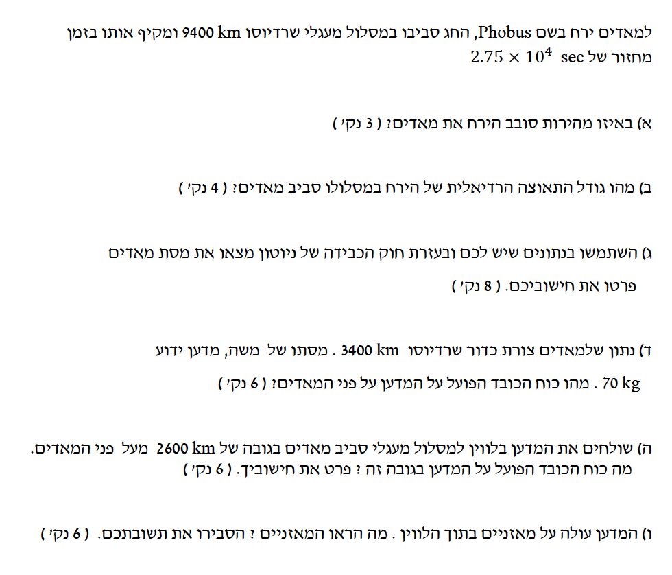

באיור מטה מוצג כוכב הלכת מאדים במרכז, והירח פובוס המקיף אותו במסלול מעגלי. הכוח היחיד הפועל על הירח הוא כוח הכבידה המכוון למרכז מאדים, והוא משמש ככוח הצנטריפטלי (רדיאלי).
רדיוס המסלול של הירח נתון בקילומטרים ונדרש להמירו למערכת MKS (מטרים): \( r = 9400 \text{ km} = 9400 \cdot 10^3 \text{ m} = 9.4 \cdot 10^6 \text{ m} \). זמן המחזור נתון בשניות: \( T = 2.75 \cdot 10^4 \text{ s} \).
את גודל המהירות המשיקית \( v \) שבה הירח סובב את מאדים.
הקשר בין מהירות משיקית לזמן מחזור בתנועה מעגלית קצובה: \( v = \frac{2\pi r}{T} \).
נציב את הנתונים המומרים אל תוך הנוסחה:
נעגל את התוצאה ל-3 ספרות מהותיות.
גודל המהירות שחישבנו בסעיף הקודם (מומלץ להשתמש בערך המדויק להמשך חישובים): \( v = 2147.46 \text{ m/s} \). רדיוס המסלול במטרים: \( r = 9.4 \cdot 10^6 \text{ m} \).
את גודל התאוצה הרדיאלית (הצנטריפטלית) \( a_R \) של הירח.
הנוסחה לתאוצה רדיאלית: \( a_R = \frac{v^2}{r} \).
נציב את הנתונים:
התאוצה הרדיאלית: \( a_R = 0.4905 \text{ m/s}^2 \), רדיוס המסלול \( r = 9.4 \cdot 10^6 \text{ m} \), וקבוע הכבידה העולמי מתוך דף הנוסחאות: \( G = 6.67 \cdot 10^{-11} \frac{\text{N}\cdot\text{m}^2}{\text{kg}^2} \).
את המסה של מאדים \( M \).
חוק הכבידה העולמי של ניוטון: \( F_G = G\frac{m_1 m_2}{r^2} \), והחוק השני של ניוטון לתנועה מעגלית: \( \sum F_R = m a_R \) כאשר הכיוון החיובי מוגדר למרכז המעגל.
הכוח היחיד שפועל בציר הרדיאלי הוא כוח הכבידה \( F_G \) שמפעיל מאדים על הירח שמסתו \( m \). נפתח את המשוואה ההדרגתית מתוך החוק השני של ניוטון:
מסת הירח \( m \) מצטמצמת בשני אגפי המשוואה (הכוח הפנימי של הכבידה פועל ביחס ישר למסה ולכן תאוצת הנפילה אינה תלויה בה). נחלץ את מסת מאדים \( M \):
נציב את הנתונים:
רדיוס מאדים הוא \( R = 3400 \text{ km} \), שיש להמירו ל- \( R = 3.4 \cdot 10^6 \text{ m} \). מסת המדען היא \( m_s = 70 \text{ kg} \), ומסת מאדים שמצאנו: \( M = 6.50 \cdot 10^{23} \text{ kg} \).
את גודל כוח הכובד שפועל על המדען כשהוא נמצא על פני מאדים.
גודל כוח הכבידה העולמי על פני כוכב לכת מתקבל מנוסחת ניוטון: \( F_G = G\frac{M m_s}{R^2} \) כאשר המרחק מחושב ממרכז מסת הכוכב.
נציב ישירות לנוסחת כוח הכבידה כדי למצוא את הכוח שהכוכב מפעיל על המדען שעל פני השטח:
גובה הלוויין מעל פני השטח הוא \( h = 2600 \text{ km} \), שלאחר המרה שווה ל- \( h = 2.6 \cdot 10^6 \text{ m} \). רדיוס המסלול הכולל ממרכז מאדים יהיה \( r_{sat} = R + h = 3.4 \cdot 10^6 + 2.6 \cdot 10^6 = 6.0 \cdot 10^6 \text{ m} \).
את גודל כוח הכובד שפועל על המדען בגובה זה.
אותה נוסחת כבידה, אך כעת המרחק הוא רדיוס המסלול הכולל: \( F_G = G\frac{M m_s}{r_{sat}^2} \).
נחשב את הכוח תוך שימוש ברדיוס המסלול החדש \( r_{sat} \):
המדען נמצא בתוך הלוויין המקיף את מאדים. שניהם נעים באותו רדיוס מסלול \( r_{sat} = 6.0 \cdot 10^6 \text{ m} \) ובאותה תאוצה צנטריפטלית.
את הוראת המאזניים (הכוח הנורמלי \( N \)) שעליהם עומד המדען והסבר פיזיקלי לכך.
החוק השני של ניוטון בציר הרדיאלי הפונה למרכז הכוכב: \( \sum F_R = m a_R \), וכן העיקרון שלפיו מאזניים מודדים את הכוח הנורמלי שמפעיל המשטח.
נבנה את משוואת הכוחות עבור המדען: כוח הכבידה \( F_G \) מושך אותו כלפי מרכז מאדים (בכיוון החיובי של הציר הרדיאלי), והכוח הנורמלי \( N \) שמפעילים עליו המאזניים דוחף אותו החוצה (בכיוון השלילי). המשוואה היא:
הלוויין והמדען שבתוכו שניהם נמצאים בתנועה מעגלית במרחק זהה, ולכן הם חווים את אותה תאוצה רדיאלית, הנגרמת אך ורק מכוח הכבידה, כך שמתקיים עבור שניהם \( a_R = \frac{F_G}{m_s} \). אם נציב זאת למשוואה נקבל:
המדען נמצא למעשה במצב של נפילה חופשית מתמדת לעבר מרכז מאדים, בדיוק כמו המאזניים והלוויין שסביבו. לכן לא נוצר ביניהם שום כוח מגע.